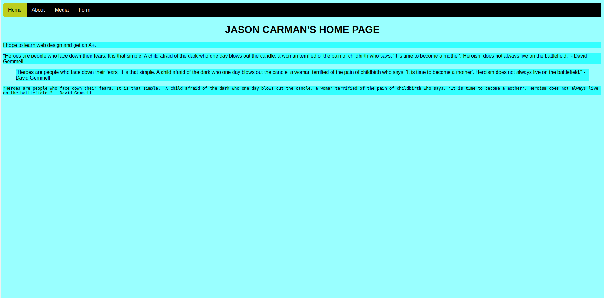

Lab 7 - Navigation Bar
Overview
This week's lab will cover the following:
- Implementing CSS comments.
- Creating and using CSS classes & IDs.
- Using CSS Pseudo-classes.
- Implementing responsive design through CSS.
- Creating a responsive navigation bar.
Lecture Slides
Stylizing your navigation bar with CSS
Open the style sheet (style.css) that you created in Lab 5. You are going to add some CSS to it to stylize our navigation bar. Since the code you are adding is strictly for the navigation, it's good to separate it from the rest of our code within a block of comments.
In lab 5 you learned how to insert comments in CSS. However, they can also span multiple lines (lab 5 had you create a comment on a single line). Either way, the syntax is the same. Here is an example.
CSS Comments
/* This comment spans multiple lines */ /* This comment spans one line */
To do:
Create two sepearate comments at the bottom of your CSS file. One that says "start navigation" and the other "end navigation". Everything in between these comments will be the CSS for our navigation. This isn't technically required for the code to work, but it does make your code easier to read; which is a good practice.
The majority of the magic that makes a navigation bar appear as such is done via CSS. Structurally it's simply a list of links within a special tag designating it as a navigation bar. To do this you use some a slightly more complex CSS selectors than you have seen up to this point. You may want to apply these attributes individually and refresh the page each time, to see what each of them are doing.
nav ul {
}
The above selector applies to unordered lists, but only if they are contained within the nav tag. Tags that are contained within or descend from other tags are called child items.
The first few attributes you'll want to change are:
- Remove the bullets, by setting the attribute list-style-type to none
- Set margin and padding to 0 - this will cause the nav to fill the top of the screen
- Set the overflow attribute to hidden - this will cause any content that fills more of the elements box than is available (hence overflow) to remain hidden
- Apply a background color of your choice
- Optional: apply a border-radius to give the appearance of rounded corners
Note the list still appears as stacked, even with the bullet points removed. You want to display a horizontal navigation bar. To accomplish this you must modify another attribute, and use another selector. This can be done a few different ways, one of the simplest of which is to change the display attribute.
To do:
Using the selector nav ul li, set the float parameter to left.
Setting the anchor tags to display as block
Enter the following code into your CSS following the nav ul li selector, and see what it does.
nav ul li a {
display: block;
color: #ffffff;
text-align: center;
padding: 14px 16px;
text-decoration: none;
}
Modify the colour to anything you would like, as long as the text is still readable.
CSS Pseudo-classes
Everything you have applied using CSS thus far has been applied to specific tags (referred to as selectors in CSS). Sometimes it's necessary to apply changes uniquely by using a class or ID. You will learn more about IDs in a future lab). Additionally CSS can be applied when an specific event occurs, like hovering over the tag. Here's a small list of pseudo-classes you can use to apply CSS.
- hover
- When the user mouses over the selector.
- focus
- When the element has focus. This used more in forms, which you will learn in a later lab.
- Visited
- Applies to all visted links.
- Link
- Applies to all unvisted links.
For a complete reference, see w3schools.
Applying what you have just learned
You're going to use a very complex selector that will change the background colour when you hover over a link, as long as it's not the active link. Apply a background colour using the following selector. Change this to a colour of your choice.
nav ul li a:hover:not(.active) {
background-color: #111111;
}
Now you are going to apply some CSS to active links. Apply the following, modifying the colours to something of your choice.
nav ul li a.active {
background-color: #bcce1e;
color: #000000;
}
Creating a responsive navigation bar
This last bit will make your navigation bar respnsive, meaning as it will display differently based on the size of the screen. First you are going stylize a class to float right.
nav ul li.right {
float: right;
}
Notice you're using a class that doesn't exist in the html. You are going to apply this class in a slightly different way. The following code will apply the above class only when the screen's maximum width is 600px.
@media screen and (max-width: 600px){
nav ul li.right,
nav ul li {float: none;}
}
Save your CSS, refresh your page in the browser and try resizing the browser window to simulate the size of a mobile device. Notice what happens!
Pulling your changes into your Apache server
Start your www instance in the AWS Learner Lab, and connect to it using SSH. Once you have logged in, change to the labs-6-10-assignment-1-username directory in your home directory. Be sure to replace username with your username, or this will not work.
cd labs-6-10-assignment-1-username
Use git pull to pull the changes in from your repository.
git pull
Copy the updated files into your document root.
sudo cp * /var/www/html
Completing the Lab
Your page should validate using the w3schools html validator & css validator. To submit your lab you need to submit the code to your GitHub repo (which you did in already in the lab). Additionally, you need to submit a screenshot of it running your server to the assignment folder in eCentennial.
Exploration Questions
- What is a parent selector?
- What is a child selector>
- What example of a CSS pseudo-class did we use in the lab?
- What does float: right; do?
- How do you reference classes and IDs in CSS?